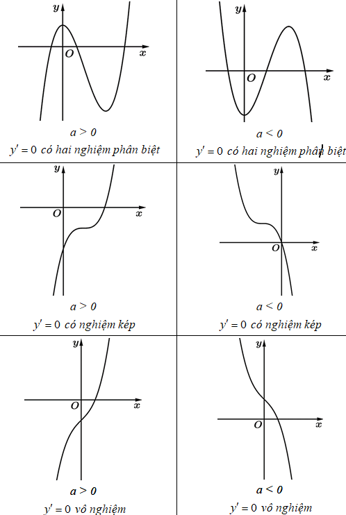
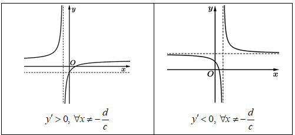
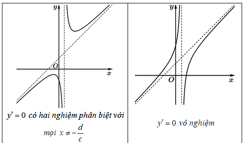

📘 KHẢO SÁT VÀ VẼ ĐỒ THỊ HÀM SỐ
Môn Toán - Lớp 12
📊 PHƯƠNG PHÁP CHUNG ĐỂ KHẢO SÁT VÀ VẼ ĐỒ THỊ HÀM SỐ
🔍 PHƯƠNG PHÁP GIẢI
- Bước 1: Tìm tập xác định $D$ của hàm số.
- Bước 2: Sự biến thiên của hàm số.
- Tìm đạo hàm $y'$. Tìm các điểm mà đạo hàm bằng 0 hoặc không tồn tại.
- Tính các giới hạn và tìm tiệm cận (nếu có) của đồ thị hàm số.
- Lập bảng biến thiên của hàm số.
- Kết luận về các khoảng đơn điệu, các điểm cực trị của hàm số (nếu có).
- Bước 3: Lập bảng giá trị và vẽ đồ thị hàm số.
- Vẽ các đường tiệm cận (nếu có) của đồ thị hàm số.
- Ta có thể tìm một số điểm đặc biệt thuộc đồ thị hàm số như giao điểm của đồ thị với trục hoành, trục tung (nếu việc tìm này đơn giản).
📊 KHẢO SÁT VÀ VẼ ĐỒ THỊ MỘT SỐ HÀM SỐ THƯỜNG GẶP
🔍 PHƯƠNG PHÁP GIẢI
- Bước 1: Tập xác định: $D=\mathbb{R}$.
- Bước 2: Sự biến thiên.
- $y' = 3ax^2+2bx+c$; cho $y'=0$ và tìm nghiệm $x_1, x_2$ (nếu có).
- Tính các giới hạn tại vô cực của hàm số: $\lim_{x \to +\infty} y$ và $\lim_{x \to -\infty} y$.
- Lập bảng biến thiên của hàm số.
- Kết luận khoảng đồng biến, nghịch biến; các điểm cực trị của hàm số (nếu có).
- Bước 3: Vẽ đồ thị hàm số.
- Lập bảng giá trị, tìm một số điểm đặc biệt thuộc đồ thị trước khi vẽ hình.
⚠️ CHÚ Ý QUAN TRỌNG
- Lưu ý: Đồ thị hàm số có tâm đối xứng là ($x_0; y_0$), trong đó $x_0$ là nghiệm của phương trình $y''=0$.
⚠️ CHÚ Ý QUAN TRỌNG
- Nhận xét: Đồ thị hàm số bậc ba được minh họa như hình sau:

📊 HÀM SỐ PHÂN THỨC HỮU TỈ $Y=\frac{AX+B}{CX+D}$ ($C \NE 0, AD-BC \NE 0$)
🔍 PHƯƠNG PHÁP GIẢI
- Bước 1: Tập xác định: $D = \mathbb{R} \setminus \{-\frac{d}{c}\}$.
- Bước 2: Sự biến thiên.
- $y' = \frac{ad-bc}{(cx+d)^2}$; $y'$ chỉ mang một dấu nên hàm số luôn đồng biến (hoặc luôn nghịch biến) trên mỗi khoảng xác định của nó.
- Hàm số không có điểm cực trị.
- Tính các giới hạn: $\lim_{x \to (-\frac{d}{c})^+} y$, $\lim_{x \to (-\frac{d}{c})^-} y$ và $\lim_{x \to \pm\infty} y = \frac{a}{c}$. Kết luận về tiệm cận đứng $x=-\frac{d}{c}$ và tiệm cận ngang $y=\frac{a}{c}$ của đồ thị hàm số.
- Lập bảng biến thiên của hàm số.
- Bước 3: Vẽ đồ thị hàm số.
- Vẽ đường tiệm cận đứng, tiệm cận ngang.
- Tìm các điểm đặc biệt thuộc đồ thị và vẽ đồ thị hàm số.
⚠️ CHÚ Ý QUAN TRỌNG
- Tâm đối xứng của đồ thị hàm số là giao điểm của hai đường tiệm cận: $I(-\frac{d}{c}; \frac{a}{c})$.
- Trục đối xứng của đồ thị hàm số là hai đường phân giác góc tạo bởi tiệm cận đứng và tiệm cận ngang của đồ thị hàm số đó.
⚠️ CHÚ Ý QUAN TRỌNG
- Đồ thị hàm số $y=\frac{ax+b}{cx+d}$ ($c \ne 0, ad-bc \ne 0$) được minh họa như hình sau:

📊 HÀM SỐ PHÂN THỨC HỮU TỈ $Y=\frac{AX^2+BX+C}{DX+E}$ ($A, D \NE 0$)
🔍 PHƯƠNG PHÁP GIẢI
- Bước 1: Tập xác định: $D=\mathbb{R} \setminus \{-\frac{e}{d}\}$.
- Bước 2: Sự biến thiên.
- $y' = \frac{adx^2+2aex+be-cd}{(dx+e)^2}$; cho $y'=0$ và tìm nghiệm $x_1, x_2$ (nếu có).
- Tính các giới hạn: $\lim_{x \to (-\frac{e}{d})^+} y$, $\lim_{x \to (-\frac{e}{d})^-} y$ và $\lim_{x \to \pm\infty} [f(x)-(\alpha x + \beta)]=0$. Kết luận về tiệm cận đứng $x=-\frac{e}{d}$ và tiệm xiên $y=\alpha x + \beta$ của đồ thị hàm số.
- Lập bảng biến thiên của hàm số và kết luận về các khoảng đơn điệu, cực trị của hàm số (nếu có).
- Bước 3: Vẽ đồ thị hàm số.
- Vẽ đường tiệm cận đứng, tiệm cận xiên của đồ thị hàm số.
- Tìm các điểm đặc biệt thuộc đồ thị và vẽ đồ thị hàm số.
⚠️ CHÚ Ý QUAN TRỌNG
- Lưu ý:
- Tâm đối xứng của đồ thị hàm số là giao điểm của hai đường tiệm cận đứng và tiệm cận xiên.
- Trục đối xứng của đồ thị hàm số là hai đường phân giác góc tạo bởi tiệm cận đứng và tiệm cận xiên của đồ thị hàm số đó.
⚠️ CHÚ Ý QUAN TRỌNG
- Đồ thị hàm số $y=\frac{ax^2+bx+c}{dx+e}$ ($a, d \ne 0$) được minh họa như hình sau:

📊 NHẬN DIỆN ĐỒ THỊ HÀM BẬC 3
⚠️ CHÚ Ý QUAN TRỌNG
- Hàm số bậc ba có dạng $y = ax^3 + bx^2 + cx + d$ với $a \ne 0$
☞ Đạo hàm: $y' = 3ax^2 + 2bx + c$ ; $y'' = 6ax + 2b$
📊 XÁC ĐỊNH DẤU CỦA A
🔍 PHƯƠNG PHÁP GIẢI
- Nhìn vào góc phải đồ thị, ta thấy đồ thị đi lên trên, tức là $\lim_{x \to +\infty} y = +\infty$, ta có $\boxed{a > 0}$.
- Ngược lại nhánh phải đồ thị đi xuống dưới, tức là $\lim_{x \to +\infty} y = -\infty$, ta có $\boxed{a < 0}$.

📊 XÁC ĐỊNH DẤU CỦA D
🔍 PHƯƠNG PHÁP GIẢI
- Xét giao điểm của đồ thị hàm số với trục tung: $\begin{cases} x = 0 \\ y = d \end{cases}$.
- Giao điểm của đồ thị với trục tung nằm trên gốc tọa độ $O \Rightarrow \boxed{d > 0}$.
- Giao điểm của đồ thị với trục tung nằm dưới gốc tọa độ $O \Rightarrow \boxed{d < 0}$.
- Giao điểm của đồ thị với trục tung trùng với gốc tọa độ $O \Rightarrow \boxed{d = 0}$.
📊 XÁC ĐỊNH DẤU CỦA B
🔍 PHƯƠNG PHÁP GIẢI
- Xét tọa độ điểm uốn (tâm đối xứng) của đồ thị hàm số là $I(x_I; y_I)$ với $x_I = -\dfrac{b}{3a}$.
- Điểm uốn $I$ nằm bên phải trục tung $Oy \Rightarrow -\dfrac{b}{3a} > 0 \Rightarrow \dfrac{b}{a} < 0 \Rightarrow \boxed{ab < 0}$.
- Điểm uốn $I$ nằm bên trái trục tung $Oy \Rightarrow -\dfrac{b}{3a} < 0 \Rightarrow \dfrac{b}{a} > 0 \Rightarrow \boxed{ab > 0}$.
- Điểm uốn $I$ thuộc trục tung $Oy$ (tức là hai điểm cực trị cách đều trục tung) $\Rightarrow \boxed{b = 0}$.
⚠️ CHÚ Ý QUAN TRỌNG
- Trong trường hợp đồ thị hàm số có hai điểm cực trị, ta có thể sử dụng định lí vi-ét để xét dấu của $b$ (sau khi biết dấu của a), ta có: $x_1 + x_2 = -\dfrac{B}{A} = -\dfrac{2b}{3a}$. Tùy vào tổng này âm, dương hoặc bằng 0 mà ta kết luận được dấu của b.
📊 XÁC ĐỊNH DẤU CỦA C
🔍 PHƯƠNG PHÁP GIẢI
- Hai điểm cực trị nằm cùng phía với trục tung $Oy$: $x_1x_2 = \dfrac{c}{3a} > 0 \Rightarrow \boxed{ac > 0}$.
- Hai điểm cực trị nằm khác phía với trục tung $Oy$: $x_1x_2 = \dfrac{c}{3a} < 0 \Rightarrow \boxed{ac < 0}$.
⚠️ CHÚ Ý QUAN TRỌNG
- Ngoài các quy tắc xét dấu hệ số hàm bậc ba như trên, ta còn có thể đánh giá đồ thị hàm số theo hai trường hợp sau:
- Đồ thị hàm số bậc ba có hai điểm cực trị $\Leftrightarrow \begin{cases} a \ne 0 \\ \Delta > 0 \end{cases}$.
- Đồ thị hàm số bậc ba không có điểm cực trị $\Leftrightarrow \begin{cases} a \ne 0 \\ \Delta \le 0 \end{cases}$.
💡 VÍ DỤ MINH HỌA
Ví dụ về Nhận diện đồ thị hàm bậc 3
Đồ thị của hàm số nào dưới đây có dạng như đường cong trong hình bên?
- $A.$ $y = x^3 - 3x$.
- $B.$ $y = -x^3 + 3x$.
- $C.$ $y = x^4 - 2x^2$.
- $D.$ $y = -x^4 + 2x^2$.
Lời giải:
Chọn A
Dạng đồ thị này là của hàm số bậc ba nên loại C, D.
Nhánh phải đồ thị đi lên, tức là $\lim_{x \to +\infty} y = +\infty$. Suy ra $a>0$.
💡 VÍ DỤ MINH HỌA
Ví dụ về Nhận diện đồ thị hàm bậc 3
Hình vẽ sau đây là đồ thị của một trong bốn hàm số cho ở các đáp án A, B, C, D. Hỏi đó là hàm số nào?
- $A.$ $y = x^3 + 2x + 1$.
- $B.$ $y = x^3 - 2x^2 + 1$.
- $C.$ $y = x^3 - 2x + 1$.
- $D.$ $y = -x^3 + 2x + 1$.
Lời giải:
Chọn C
Nhánh phải đồ thị đi lên nên $\lim_{x \to +\infty} y = +\infty$. Suy ra $a>0$. Loại D
Hàm số có hai điểm cực trị nên $y' = 0$ có hai nghiệm phân biệt, ta loại A.
Xét B: $y' = 3x^2 - 4x$; $y' = 0 \Rightarrow \begin{cases} x = 0 \\ x = \dfrac{4}{3} \end{cases}$ (loại). Loại B
Xét C: $y' = 3x^2 - 2$; $y' = 0 \Rightarrow x = \pm \sqrt{\dfrac{2}{3}}$ (nhận).
💡 VÍ DỤ MINH HỌA
Ví dụ về Nhận diện đồ thị hàm bậc 3
Cho hàm số $y = ax^3 + bx^2 + cx + d$ có đồ thị như hình vẽ bên. Mệnh đề nào dưới đây đúng?
- $A.$ $a < 0, b > 0, c > 0, d < 0$.
- $B.$ $a < 0, b < 0, c > 0, d < 0$.
- $C.$ $a > 0, b < 0, c < 0, d > 0$.
- $D.$ $a < 0, b > 0, c < 0, d < 0$.
Lời giải:
Chọn A
Nhánh phải đồ thị đi xuống nên $\lim_{x \to +\infty} y = -\infty \Rightarrow \boxed{a < 0}$.
Giao điểm của đồ thị với trục tung: $\begin{cases} x = 0 \\ y = d < 0 \end{cases}$ (do giao điểm này nằm dưới gốc tọa độ).
Ta có: $y' = 3ax^2 + 2bx + c \Rightarrow y'' = 6ax + 2b = 0 \Rightarrow x = -\dfrac{b}{3a} = x_I$ (hoành độ tâm đối xứng).
Vì tâm đối xứng đồ thị nằm bên phải trục Oy nên $x_I = -\dfrac{b}{3a} > 0 \Rightarrow \dfrac{b}{a} < 0 \Rightarrow \boxed{b > 0}$.
Hai điểm cực trị nằm hai phía Oy nên $x_1x_2 < 0 \Rightarrow \dfrac{c}{3a} < 0 \Rightarrow \dfrac{c}{a} < 0 \Rightarrow \boxed{c > 0}$.
💡 VÍ DỤ MINH HỌA
Ví dụ về Nhận diện đồ thị hàm bậc 3
Cho đường cong $(C): y = ax^3 + bx^2 + cx + d$ có đồ thị như hình bên. Khẳng định nào sau đây là đúng?
- $A.$ $a > 0, b < 0, c < 0, d < 0$.
- $B.$ $a > 0, b > 0, c < 0, d > 0$.
- $C.$ $a < 0, b > 0, c > 0, d < 0$.
- $D.$ $a > 0, b > 0, c < 0, d < 0$.
Lời giải:
Chọn D
Vì nhánh phải đồ thị đi lên nên $\lim_{x \to +\infty} y = +\infty \Rightarrow \boxed{a > 0}$.
Giao điểm của đồ thị với trục tung: $\begin{cases} x = 0 \\ y = d < 0 \end{cases}$ (do giao điểm này nằm dưới gốc tọa độ).
Ta có: $y' = 3ax^2 + 2bx + c \Rightarrow y'' = 6ax + 2b = 0 \Rightarrow x = -\dfrac{b}{3a} = x_I$ (hoành độ tâm đối xứng).
Vì tâm đối xứng đồ thị nằm bên trái trục Oy nên $x_I = -\dfrac{b}{3a} < 0 \Rightarrow \dfrac{b}{a} > 0 \Rightarrow \boxed{b > 0}$.
Hai điểm cực trị nằm hai phía Oy nên $x_1x_2 < 0 \Rightarrow \dfrac{c}{3a} < 0 \Rightarrow \dfrac{c}{a} < 0 \Rightarrow \boxed{c < 0}$.
📊 NHẬN DIỆN ĐỒ THỊ HÀM NHẤT BIẾN
⚠️ CHÚ Ý QUAN TRỌNG
- Hàm số nhất biến có dạng $y = \dfrac{ax+b}{cx+d}$ với $c \ne 0, ad - bc \ne 0$
☞ Đạo hàm: $y' = 3ax^2 + 2bx + c$ ; $y'' = 6ax + 2b$
📊 TIỆM CẬN ĐỨNG: $X = -\dfrac{D}{C}$
🔍 PHƯƠNG PHÁP GIẢI
- Nếu tiệm cận đứng nằm bên phải Oy thì $-\dfrac{d}{c} > 0 \Rightarrow \dfrac{d}{c} < 0$.
- Nếu tiệm cận đứng nằm bên trái Oy thì $-\dfrac{d}{c} < 0 \Rightarrow \dfrac{d}{c} > 0$.
- Nếu tiệm cận đứng trùng với Oy thì $-\dfrac{d}{c} = 0 \Rightarrow d = 0$.

📊 TIỆM CẬN NGANG: $Y = \dfrac{A}{C}$
🔍 PHƯƠNG PHÁP GIẢI
- Nếu tiệm cận ngang nằm phía trên trục Ox thì $\dfrac{a}{c} > 0$.
- Nếu tiệm cận ngang nằm phía dưới trục Ox thì $\dfrac{a}{c} < 0$.
- Nếu tiệm cận ngang trùng với trục Ox thì $a=0$.
📊 TÍNH ĐƠN ĐIỆU HÀM SỐ
🔍 PHƯƠNG PHÁP GIẢI
- Đạo hàm $y' = \dfrac{ad-bc}{(cx+d)^2}$.
- Nếu mỗi nhánh đồ thị hàm số đi lên thì $y' > 0, \forall x \ne -\dfrac{d}{c} \Rightarrow \boxed{ad-bc > 0}$.
- Nếu mỗi nhánh đồ thị hàm số đi xuống thì $y' < 0, \forall x \ne -\dfrac{d}{c} \Rightarrow \boxed{ad-bc < 0}$.
📊 GIAO ĐIỂM CỦA ĐỒ THỊ HÀM SỐ VỚI TRỤC OX
🔍 PHƯƠNG PHÁP GIẢI
- Giao điểm giữa đồ thị hàm số $y = \dfrac{ax+b}{cx+d}$ với trục Ox là điểm $M\left(-\dfrac{b}{a}; 0\right)$ với $a \ne 0$.
- Nếu điểm M nằm bên phải gốc tọa độ O thì $-\dfrac{b}{a} > 0 \Rightarrow \dfrac{b}{a} < 0$.
- Nếu điểm M nằm bên trái gốc tọa độ O thì $-\dfrac{b}{a} < 0 \Rightarrow \dfrac{b}{a} > 0$.
- Nếu điểm M trùng với gốc tọa độ O thì $-\dfrac{b}{a} = 0 \Rightarrow b = 0$.
📊 GIAO ĐIỂM CỦA ĐỒ THỊ HÀM SỐ VỚI TRỤC OY
🔍 PHƯƠNG PHÁP GIẢI
- Giao điểm giữa đồ thị hàm số $y = \dfrac{ax+b}{cx+d}$ với trục Oy là điểm $N\left(0; \dfrac{b}{d}\right)$ với $d \ne 0$
- Nếu điểm N nằm phía trên gốc tọa độ O thì $\dfrac{b}{d} > 0$.
- Nếu điểm N nằm phía dưới gốc tọa độ O thì $\dfrac{b}{d} < 0$.
- Nếu điểm N trùng với gốc tọa độ O thì $\dfrac{b}{d} = 0 \Rightarrow b = 0$.
💡 VÍ DỤ MINH HỌA
Ví dụ về Giao điểm của đồ thị hàm số với trục Oy
Đường cong trong hình vẽ bên là đồ thị hàm số nào dưới đây?
- $A.$ $y = x^3 - 3x - 1$.
- $B.$ $y = \dfrac{2x-1}{x-1}$.
- $C.$ $y = \dfrac{x+1}{x-1}$.
- $D.$ $y = x^4 + x^2 + 1$.
Lời giải:
Chọn C
Đồ thị đã cho là của hàm số nhất biến (bậc một trên bậc một) nên ta loại A, D.
Tiệm cận đứng của đồ thị là $x=1$, tiệm cận ngang của đồ thị là $y=1$. Loại B.
💡 VÍ DỤ MINH HỌA
Ví dụ về Giao điểm của đồ thị hàm số với trục Oy
Hình vẽ bên là đồ thị của hàm số nào sau đây?
- $A.$ $y = \dfrac{2x+3}{x+1}$.
- $B.$ $y = \dfrac{2x+1}{x-1}$.
- $C.$ $y = \dfrac{2x-1}{x+1}$.
- $D.$ $y = \dfrac{-2x+1}{x+1}$.
Lời giải:
Chọn C
Tiệm cận đứng của đồ thị là $x = -1$, tiệm cận ngang của đồ thị là $y=2$. Loại B, D.
Ta thấy mỗi nhánh của đồ thị hàm số đã cho đi lên (từ trái sang phải) nên $y' > 0$.
Xét A: $y = \dfrac{2x+3}{x+1} \Rightarrow y' = \dfrac{-1}{(x+1)^2} < 0, \forall x \ne -1$ (loại).
Xét C: $y = \dfrac{2x-1}{x+1} \Rightarrow y' = \dfrac{3}{(x+1)^2} > 0, \forall x \ne -1$ (thỏa mãn).
💡 VÍ DỤ MINH HỌA
Ví dụ về Giao điểm của đồ thị hàm số với trục Oy
Cho hàm số $y = \dfrac{ax+b}{cx+d}$ có đồ thị như trong hình bên dưới. Biết rằng $a$ là số thực dương, hỏi trong các số $b, c, d$ có tất cả bao nhiêu số dương?
- $A.$ 1.
- $B.$ 2.
- $C.$ 0.
- $D.$ 3.
Lời giải:
Chọn B
Tiệm cận ngang của đồ thị nằm phía trên $Ox$ nên $y = \dfrac{a}{c} > 0$ mà $a>0 \Rightarrow c>0$.
Tiệm cận đứng của đồ thị nằm bên trái $Oy$ nên $x = -\dfrac{d}{c} < 0 \Rightarrow \dfrac{d}{c} > 0$ mà $c>0 \Rightarrow d>0$.
Giao điểm của đồ thị hàm số với $Oy$ là $\left(0; \dfrac{b}{d}\right)$ nằm dưới $O$ nên $\dfrac{b}{d} < 0$ mà $d>0 \Rightarrow b<0$.
Vậy $b < 0, c > 0, d > 0$.
💡 VÍ DỤ MINH HỌA
Ví dụ về Giao điểm của đồ thị hàm số với trục Oy
Cho hàm số $y = \dfrac{ax-b}{x-1}$ có đồ thị như hình vẽ dưới đây: Khẳng định nào sau đây đúng?
- $A.$ $b < a < 0$.
- $B.$ $a < b < 0$.
- $C.$ $b > a$ và $a < 0$.
- $D.$ $a < 0 < b$.
Lời giải:
Chọn A
Tiệm cận ngang của đồ thị hàm số là $y = \dfrac{a}{1} = -1 \Rightarrow a = -1$.
Giao điểm của đồ thị hàm số với $Oy$ là $(0; b) = (0; -2) \Rightarrow b = -2$.
Vậy $b < a < 0$.
💡 VÍ DỤ MINH HỌA
Ví dụ về Giao điểm của đồ thị hàm số với trục Oy
Cho hàm số $y = \dfrac{ax+b}{cx+d}$ có đồ thị như hình vẽ bên. Mệnh đề nào dưới đây đúng?
- $A.$ $ac > 0, bd > 0$.
- $B.$ $ab < 0, cd < 0$.
- $C.$ $bc > 0, ad < 0$.
- $D.$ $bc < 0, ad > 0$.

Lời giải:
Chọn C
Tiệm cận đứng đồ thị nằm bên phải $Oy$ nên $-\dfrac{d}{c} > 0 \Rightarrow cd < 0$ (1).
Tiệm cận ngang của đồ thị nằm trên $Ox$ nên $\dfrac{a}{c} > 0 \Rightarrow ac > 0$ (2).
Lấy (1) chia (2) theo vế: $\dfrac{cd}{ac} < 0 \Rightarrow \dfrac{d}{a} < 0 \Rightarrow ad < 0$.
Giao điểm của đồ thị với $Oy$ là $\left(0; \dfrac{b}{d}\right)$ nằm dưới điểm $O$ nên $\dfrac{b}{d} < 0 \Rightarrow bd < 0$ (3).
Lấy (1) chia (3) theo vế: $\dfrac{cd}{bd} > 0 \Rightarrow \dfrac{c}{b} > 0 \Rightarrow bc > 0$.
📊 NHẬN DIỆN ĐỒ THỊ HÀM PHÂN THỨC BẬC 2
📊 HÀM SỐ DẠNG $Y = \dfrac{AX^2+BX+C}{MX+N}$ VỚI $AM \NE 0$
🔍 PHƯƠNG PHÁP GIẢI
- Tập xác định: $D = \mathbb{R} \setminus \left\{-\dfrac{n}{m}\right\}$ và đạo hàm $y' = \dfrac{am \cdot x^2 + 2an \cdot x + bn - mc}{(mx+n)^2}$.
- Hướng bên phải của đồ thị đi lên khi a, m cùng dấu và đi xuống khi a, m trái dấu.
⚠️ CHÚ Ý QUAN TRỌNG
- Đồ thị hàm số $y = \dfrac{ax^2+bx+c}{mx+n}$ ($am \ne 0$)
- Có tiệm cận đứng là đường thẳng $x = -\dfrac{n}{m}$ và tiệm cận xiên là đường thẳng $y = \dfrac{a}{m}x - \dfrac{an-bm}{m^2}$.
- Nhận giao điểm của tiệm cận đứng và tiệm cận xiên làm tâm đối xứng, tâm đối xứng này cũng là trung điểm của đoạn thẳng nối 2 điểm cực trị của đồ thị (nếu có).
- Nhận hai đường phân giác của các góc tạo bởi tiệm cận đứng và tiệm cận xiên làm trục đối xứng.
- Đường thẳng đi qua hai điểm cực trị (nếu có) có phương trình $y = \dfrac{(ax^2+bx+c)'}{(mx+n)'} = \dfrac{2ax+b}{m}$.
💡 VÍ DỤ MINH HỌA
Ví dụ về Hàm số dạng $y = \dfrac{ax^2+bx+c}{mx+n}$ với $am \ne 0$
Bảng biến thiên bên dưới là của hàm số nào sau đây?
- $A.$ $y = \dfrac{2x^2+x+15}{-x-1}$.
- $B.$ $y = \dfrac{-x^2+x-18}{x+1}$.
- $C.$ $y = \dfrac{x^2+5x-24}{x+1}$.
- $D.$ $y = \dfrac{3x^2+3x+12}{-x-1}$.
Lời giải:
Chưa có lời giải.
💡 VÍ DỤ MINH HỌA
Ví dụ về Hàm số dạng $y = \dfrac{ax^2+bx+c}{mx+n}$ với $am \ne 0$
Câu 87. Đồ thị hình bên là của hàm số nào sau đây ?
- $A.$ $y = \dfrac{2x^2+3x+1}{x+1}$.
- $B.$ $y = \dfrac{x^2+x+4}{x+1}$.
- $C.$ $y = \dfrac{-x^2-3x+10}{x+1}$.
- $D.$ $y = \dfrac{3x^2+5x-2}{x+1}$.
Lời giải:
Chưa có lời giải.
📚 ĐỊNH NGHĨA
Định Nghĩa
Một hàm số $f(x)$ được gọi là chẵn nếu với mọi $x$ thuộc tập xác định $D$, ta có $-x \in D$ và $f(-x)=f(x)$.
🎯 ĐỊNH LÝ
Định Lý
Nếu hàm số $y=f(x)$ là hàm số chẵn thì đồ thị của nó đối xứng qua trục tung $Oy$.
$$ f(-x) = f(x) $$
💡 VÍ DỤ MINH HỌA
Ví dụ về Hàm số dạng $y = \dfrac{ax^2+bx+c}{mx+n}$ với $am \ne 0$
Xét tính chẵn lẻ của hàm số $y = \cos(x) + x^2$.
Lời giải:
Tập xác định $D = \mathbb{R}$.
Với mọi $x \in D$, ta có $-x \in D$.
Ta có $f(-x) = \cos(-x) + (-x)^2 = \cos(x) + x^2 = f(x)$.
Vậy hàm số đã cho là hàm số chẵn.
⚠️ CHÚ Ý QUAN TRỌNG
- Hàm số $y=\sin x$ là hàm lẻ.
- Hàm số $y=\cos x$ là hàm chẵn.